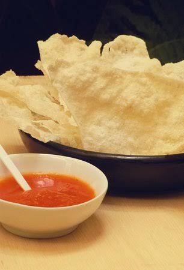
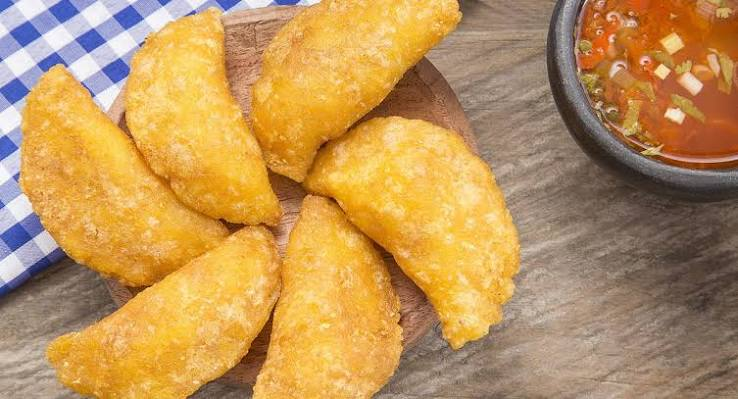
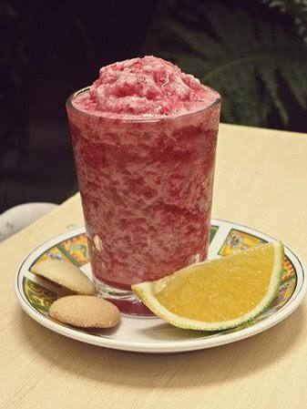
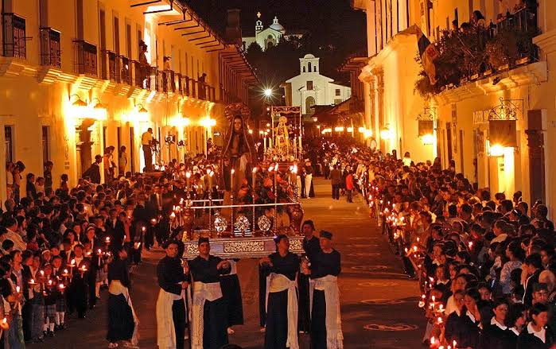

Bienvenidos al Cauca
El departamento del Cauca es una tierra mágica ubicada al suroeste de Colombia. Es reconocido internacionalmente por su riqueza pluriétnica, su historia colonial reflejada en la Ciudad Blanca de Popayán y la majestuosidad de sus paisajes naturales que van desde volcanes nevados hasta las costas del Pacífico.
Dato clave: Popayán fue declarada por la UNESCO como la primera Ciudad de la Gastronomía en el año 2005 gracias a su preservación de saberes tradicionales.
Gastronomía Típica
Los sabores culinarios del Cauca son el resultado de un mestizaje cultural único entre tradiciones indígenas, africanas y españolas.

La Carantanta
Un pasabocas crujiente de maíz que se extrae del pegado que queda en la paila al cocinar la masa.

Empanadas de Pipián
Deliciosas empanadas rellenas de un guiso especial de papa criolla, carne, huevo y la famosa salsa de pipián.

El Salpicón Payanés
Una refrescante bebida tradicional de Popayán elaborada con una mezcla perfecta de frutas locales como mora, lulo y guanábana.
Turismo Extraordinario
El departamento ofrece destinos arqueológicos, naturales y coloniales sin igual. Entre los lugares más destacados para visitar se encuentran el imponente Parque Nacional Natural Puracé, hogar del cóndor andino y hermosas termales azufradas; el místico Parque Arqueológico de Tierradentro con sus tumbas prehispánicas subterráneas únicas en el mundo; y el municipio de Silvia, epicentro de la cultura Misak donde los paisajes verdes andinos enmarcan las tradiciones ancestrales de la región.
También ofrece diferentes épocas del año como puede ser una de ellas la Semana Santa.
